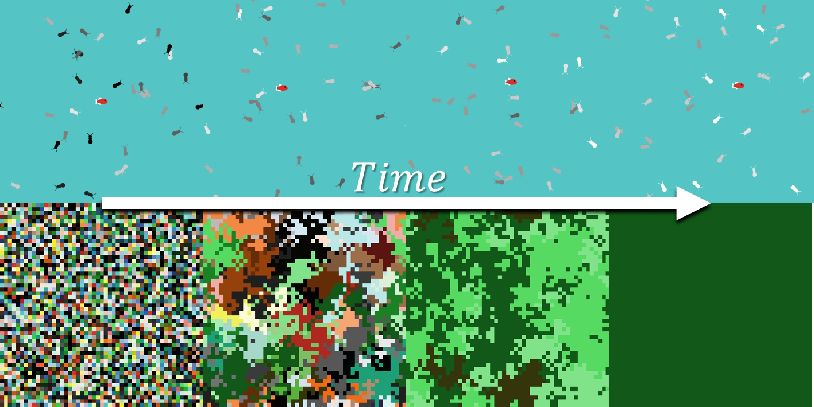

by Sergi Valverde and Blai Vidiella
Complex systems like the Internet, the World-wide-web, school friendship networks, social insects and organisms are examples of highly interconnected networks that are based not only on their components but also on the interactions between them. During the last ten years, we have developed an entire educational program based on the theoretical and computational principles of Complex Systems science, in the degree of Biomedical Engineering. In this summer school, we hope to transfer our enthusiasm for complex systems, evolution and computer simulation to high-school students between the ages of 13 and 16.
Updated on July 12th 2017 by Sergi Valverde (@svalver).